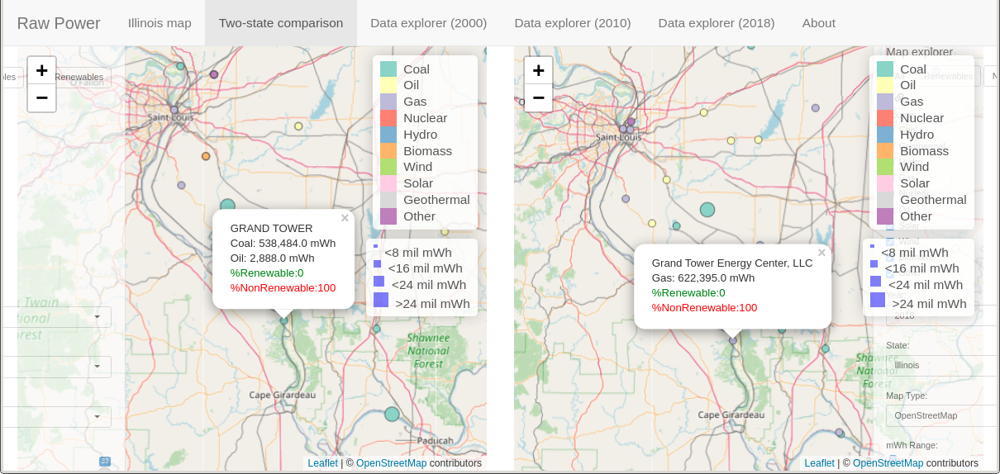
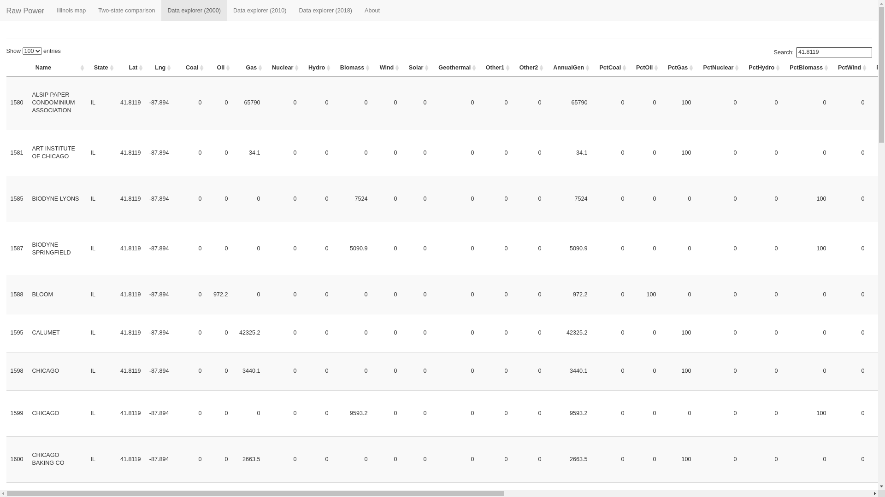
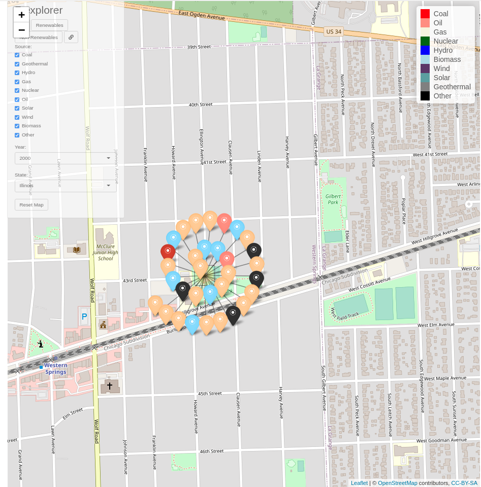

Project 2: Introduction | Data | Interesting notes on the data
Distribution of power. With the advent of solar and wind energy in later years of the dataset, distribution of power appears to be more geographically spread out.
A move from coal to gas power generation. As previously seen (Project 1), in the US in the last 30 years there has been an extensive shift away from coal power generation, and similarly an extensive shift toward gas power generation. This can be visualized in action in the present application. For example, while the Grand Tower power plant in Illinois generated 0.5 million mWh of electricity from coal in 2000, by 2018 it had switched to 0.6 million mWh of electricity generated from gas (Figure 1).

Figure 1. Comparison of the Grand Tower power plant in the years 2000 and 2018. Furthermore, in the nearby town of Paducah, the Joppa Steam power plant is pictured as decreasing in power generation from 2000 to 2010. Specifically, the Joppa Steam power plant reduced its power production by roughly 50% in the years 2000 to 2018, going from 8 million mWh of coal electricity produced in 2000 to 4 million mWh of coal electricity produced in 2018.
Coarse-grained location data in 2000 dataset. Along with a number of plants that had N/A for their geocoordinate (see here), as a whole geocoordinates in the 2000 dataset appear to be coarse-grained. For example, in the Chicago, Illinois region, a single Latitude/Longitude geocoordiate (41.8119, -87.8940) is attached to 32 separate plants (Figures 2-3). Later inspection, through the use of a Jupyter notebook, highlights this coarse-grained aspect of the 2000 dataset: Only 44 percent of power plants have unique geocoordinates in the 2000 dataset, as opposed to roughly 97 percent and 99 percent in the 2010 and 2018 datasets, respectively (Table 1).

Figure 2. Exploration of a reused geocoordinate in the 2000 dataset through use of the dataset explorer tab of the application.

Figure 3. A view of 32 power plants with identical geocoordinates in the 2000 dataset. The general location shown is the Chicago, Illinois region. In later datasets, the power plants have more precise geocoordinates. In fact, in later datasets no power plant is located at this exact geocoordinate (41.8119, -87.8040).
| Dataset | # unique Lat / Lng | # rows | Percent unique Lat / Lng |
|---|---|---|---|
| 2000 | 2031 | 4613 | 44.0% |
| 2010 | 5254 | 5393 | 97.4% |
| 2018 | 8501 | 8604 | 98.8% |